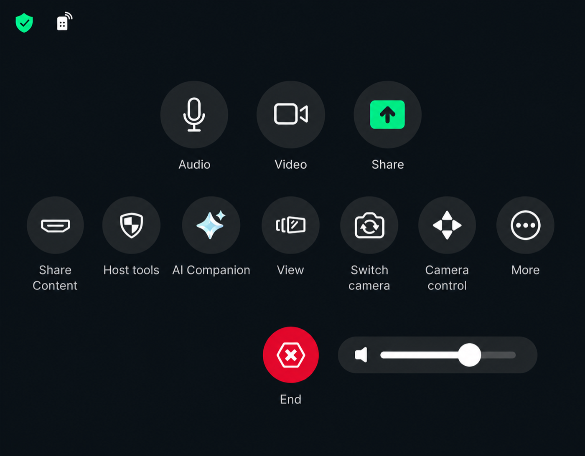
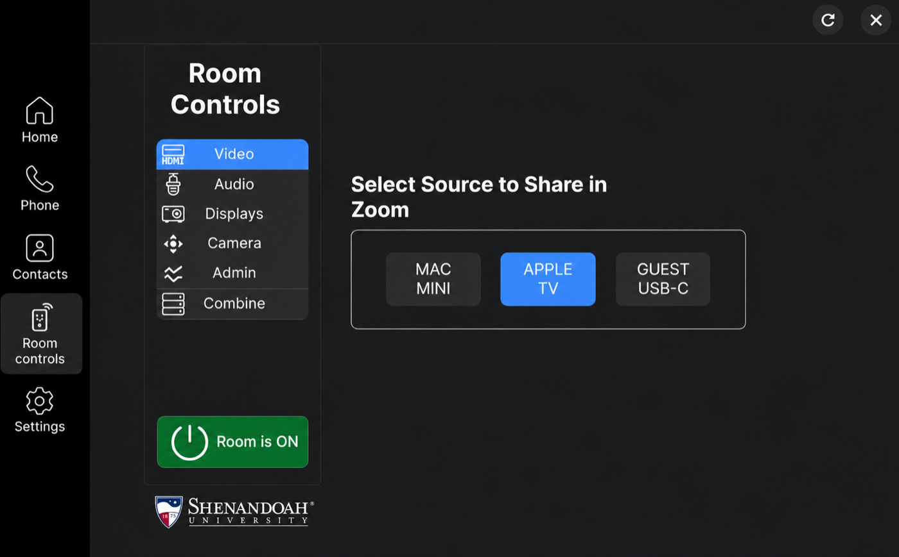

Select the source
Open Room ControlsSelect the Room Controls symbol in Zoom.
Select VideoOpen Video if it is not already selected.
Choose the sourceSelect the connected computer or device you plan to present.
Return to ZoomSelect the X in the upper-right corner.
Use Room Controls for devices
This screen is mainly for choosing the presentation source.
Use Zoom for the meeting
Use the regular Zoom controls for audio, sharing, captions, recording, View, and ending the meeting.